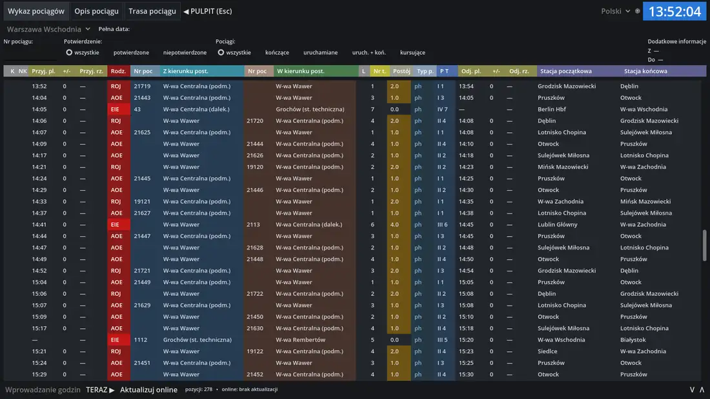

Gra symulacyjna · Godot 4.3 · GDScript
RepozytoriumDyżurny Ruchu: symulator nastawni LCS
Gracz prowadzi ruch pociągów na stacji Warszawa Wschodnia: nastawia przebiegi, zapowiada pociągi sąsiednim posterunkom i zgłasza usterki.
Na co patrzeć: silnik zależności oddzielony od interfejsu, test dymny całej rozgrywki i automatyczny gracz, który wykrywa zakleszczenia ruchu.
- GDScript 5 942 linii
- testy 837 linii
- Python 705 linii (narzędzia)
- JSON
- wersja 0.4.0

ScreenshotProbe z repozytorium, 10.11.2026.Jak działa nastawianie przebiegu
- Dyżurny wybiera polecenie, wskazuje początek i koniec drogi przebiegu.
- Urządzenia szukają wolnej drogi po grafie torów (przeszukiwanie wszerz) i pomijają odcinki zajęte, zamknięte albo użyte w innym przebiegu.
- Rozjazdy przestawiają się przez 3 sekundy. Cała droga jest w tym czasie zamknięta dla innych przebiegów.
- Po utwierdzeniu semafor podaje sygnał zezwalający.
- Za jadącym pociągiem odcinki zwalniają się po kolei.
Stacja w grze ma 9 torów, 31 rozjazdów i 27 sygnalizatorów. Rozkład dobowy liczy 278 pozycji. Układ torowy i rozkład są w plikach JSON, więc nową stację dodaje się bez zmian w kodzie.

Demo na żywo
Logika z pliku scripts/core/interlocking.gd przeniesiona do JavaScript. Posterunek poniżej jest fikcyjny i mały (2 tory, 2 rozjazdy), żeby zmieścił się na stronie.
| Godzina | Rodzaj | Treść zapisu |
|---|
Ręcznie: wybierz polecenie, kliknij sygnalizator początku (na przykład A), potem koniec (N1, N2 albo przycisk szlaku). ZD zwalnia przebieg, ZW przestawia rozjazd. Komunikaty odmowy pochodzą z kodu gry.
Testy w repozytorium
- SmokeTest: 22 kontrole pełnej pętli gry, od zapowiedzenia pociągu po zapis dziennika EDR.
- DispatchProbe: automatyczny dyżurny gra przez 90 minut czasu symulacji i zgłasza każdy zablokowany pociąg.
- ModeProbe, DockProbe, ScreenshotProbe: przełączanie ekranów pod obciążeniem, tabele na pulpicie, zrzuty do kontroli wyglądu.
Log testu dymnego 22/22 PASS uruchomiony 10.11.2026, Godot 4.3 bez okna
$ godot --headless --path . res://tests/SmokeTest.tscn --quit-after 60000 [PASS] Żądanie pozwolenia od sąsiedniego posterunku [PASS] Danie pozwolenia — pociąg oczekuje przed semaforem wjazdowym C [PASS] Nastawianie dwuprzyciskowe C → N5 (rozjazdy: 10+, 12-, 15+, 8+) [PASS] Utwierdzenie przebiegu, rozjazdy w położeniu, sygnał zezwalający [PASS] Wjazd na tor 5 zakończony [PASS] Potwierdzenie przyjazdu „w całości” [PASS] Odmowa nastawienia przebiegu wyjazdowego bez pozwolenia [PASS] Otrzymano pozwolenie na wyprawienie pociągu [PASS] Przebieg wyjazdowy N5 → szlak W-wa Rembertów [PASS] Oznajmienie odjazdu sąsiedniemu posterunkowi [PASS] Pociąg opuścił posterunek (zwolnienie przebiegu na szlaku) [PASS] Przebieg manewrowy Tm1 → K8 (Grochów → tor 8) [PASS] Skład podstawiony na tor 8 [PASS] Przebieg A → N1 nastawiony mimo usterki semafora [PASS] Sygnał zastępczy (Sz) podany na uszkodzonym semaforze A [PASS] Pociąg wjechał na sygnał zastępczy na tor 1 [PASS] Zgłoszenie usterki — rozpoczęto usuwanie (ETA 9 min) [PASS] Usterka usunięta — urządzenia sprawne [PASS] ZW — rozjazd nr 1 przestawiony z + na - [PASS] ZD — zwolnienie drogi przebiegu (ZDM odrzucone dla przebiegu pociągowego) [PASS] Kontrola wrogości przebiegów — drugi przebieg na tor 6 odrzucony [PASS] EDR: 27 zapisów wszystkich rodzajów, rozkład: 280 pozycji, plik zapisany TEST DYMNY: OK